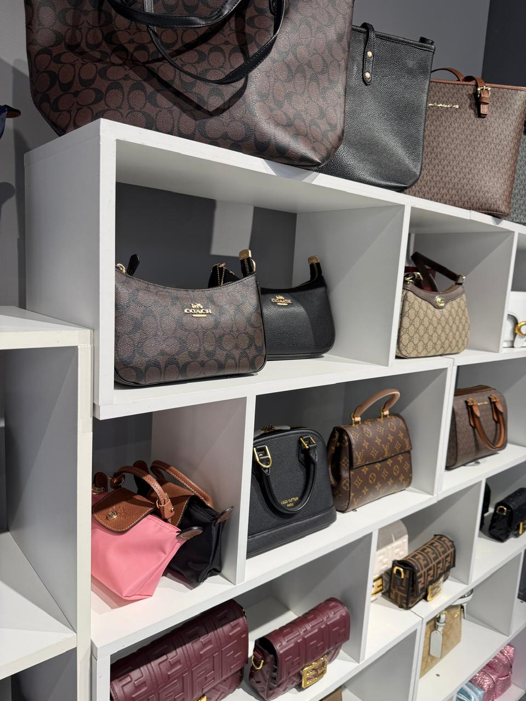

Эксклюзивные сумки и аксессуары

Отдел аксессуаров в Dielly — это наша особая гордость. Мы понимаем, что сумочка для женщины — это не просто предмет гардероба для хранения вещей, а важное дополнение к образу, отражающее ее характер и стиль. В нашем ассортименте представлены как повседневные базовые модели, так и нарядные клатчи для особых вечерних выходов. Мы привозим качественные изделия из экокожи и натуральных материалов, делая акцент на надежной фурнитуре и безупречном пошиве.
Наш ассортимент постоянно обновляется в зависимости от сезона. Мы предлагаем различные формы и размеры: от вместительных шопперов до элегантных кросс-боди. Ознакомьтесь с основными категориями нашего каталога ниже, чтобы найти идеальную сумочку для себя или в подарок.
Популярные категории сумок:
- Повседневные тоуты (Tote bags)
- Вместительные и практичные сумки жесткой формы. Идеально подходят для деловых женщин, которым необходимо носить с собой документы формата А4 или небольшой ноутбук. Цена: от 25 000 KZT.
- Вечерние клатчи
- Миниатюрные изящные сумочки без ручек или на тонкой цепочке. Доступны в базовых цветах, а также с декоративными элементами для торжественных мероприятий. Цена: от 15 000 KZT.
- Кросс-боди (Cross-body)
- Удобные сумки через плечо среднего размера на длинном ремешке. Отличный вариант для прогулок по городу и повседневной носки, оставляют руки свободными. Цена: от 18 000 KZT.